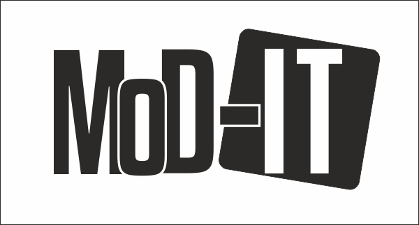

Keyboard required
← → Move · ↑ Jump / climb / parry · ↓ Crouch / climb down · Shift Act / grab / strike
The original game saves on levels 3–13. A checkpoint restores the beginning of the saved level, remaining time and health. It is kept on this device. Ctrl+L works at the original title screen. The Load checkpoint button restarts the game and loads your checkpoint automatically.
Click the game screen to return keyboard focus. Switching tabs pauses the game; choose Resume when you return.
Changing the sound device takes effect when you restart the game.
All game files, the emulator and checkpoints stay in this browser. No account is needed.
Your saved checkpoint will be kept.
Enable JavaScript to play.